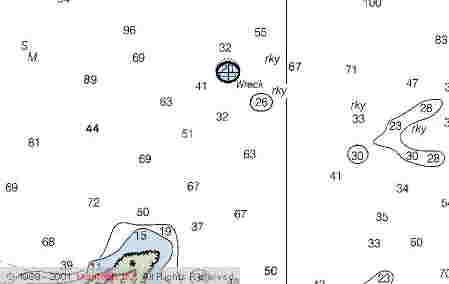

Link Index
MWDC
Home Page
Shipwrecks Page
Albert Galatin
Alice M. Colburn
Alice M.
Lawrence
Ardandhu
Barge and Crane
California
Charles S. Haight
Chester Poling
City of
Salisbury
Corvan
Dixie Sword
Edward Rich
French Van
Gilder
Henry Endicott
Herbert
Herman Winter
Hilda Garston
HMCS St. Francis
James
Longstreet
John Dwight
Kershaw
Kiowa
Lackawanna
Lunet
Mars
Pemberton
Pendleton
Pinthis
Port Hunter
Pottstown
Romance
Seaconnet
Trojan
USS Grouse
USS New
Hampshire
USS Triana
USS Yankee
USS YSD
Vineyard Sound
Lightship |
Description:
Coastal Tanker; Steel
Dimensions: length
- 169.7 ft. width
- 30.1 ft. depth
- 12.4 ft.
Tonnage: gross - 556, other
- Dead Weight - 402
Propulsion: Motor
Vessel, single propeller
Machinery: (1930)
Fairbanks, Morse & Co., 5 cylinder Oil Engine, 14" cylinder diameters, 17"
stroke, 400 Brake Horse Power
Cargo: 6000 barrels of number 2 fuel oil
The Shipwreck
Date Sunk: February 10, 1957
Cause: Foundered
Location: Cape Ann, off Loblolly Cove, ½ mile northeast of Thatcher
Island.
Coordinates: Latitude,
42o - 38' - 52"N Longitude,70o - 34' - 11"W
Loran:
At 8:30 Sunday morning, after loading
fuel oil for delivery to Newington, New Hampshire, the coastal tanker Chelsea left
Boston. Visibility was good, but a 35-mph northwesterly wind was whipping up seas off
shore. Captain Keith Beale hoped to avoid the rough water by hugging the shorline, taking
advantage of the protection it offered. Around 11:30 Beale turned command over to his
Chief Mate, and went below. About 1 hour later Chelsea ground to a halt. The Chief
had attempted a shortcut, popular with the Gloucester fishermen, between Straitsmouth
Island and the Dry Salvages. He cut in to close to the submerged section of the Sandy Bay
Breakwater, on the outgoing tide, and the tanker came to ground. The force of the impact
opened a gash in her bow.
Chelsea was hard aground and the crew's attempts to free her
were in vain. At last a Coast Guard 36-foot motor lifeboat came to remove all but
skipper Beale.
The Coast Guard already had their hands full when Chelsea
happened onto the breakwater. Late Saturday evening, the tanker Franco Lisi
grounded on Little Misery Island off Boston. Although the vessel freed itself shortly
after noon, Sunday, no cutter was available to render immediate assistance to the Chelsea.
About 6 hours after running aground, the Coast Guard cutter Evergreen
was standing by the helpless tanker. Pounding seas had opened the gash in her bow to near
amidship, a length of 80 feet. In the hours before Evergreen arrived it was decided
to attempt to patch the hole while the ship was still aground. Her crew was returned but
before work could commence and just as the Coast Guard motor lifeboat was
attempting to ferry a towline to the Evergreen, the rising tide floated Chelsea
off the breakwater.
Water was now pouring into the tanker through the gash in her hull.
Immediately, the motor lifeboat removed two of Chelsea's crew as strong winds
pushed the tanker in a Southerly direction. When roughly off Loblolly Cove, Chelsea began
to settle fast. With little time for rescue remaining, the Coast Guard lifeboat
edged in close to the tanker. Captain Beale and the remaining crew jumped for their lives,
Chelsea, literally, sinking from beneath their feet. A crewman on the lifeboat
quickly took an axe to the towline, to prevent his own vessel from being dragged under.
Chelsea settled into 60 feet of water.
Back to Top
Dive
Site Conditions
Depth in feet: maximum - 60; minimum
- 45
Visibility in feet:
average -
Chelsea settled with her bow on a
ledge and her stern buried in the mud with no support amidship. This position broke the
ship in two. The bow came to rest alongside, the ledge wall it was once atop, protecting
the bow from storm damage. The bow gunnels are level with the top of the ledge. Over the
years tidal action separated the two pieces. The stern is scattered and broken up on the
bottom. The bow, until recently was known as a "Hollywood" wreck. It looked like
a ship and was very photogenic, not a broken and twisted pile of scrap characterized by so
many of New England's shipwrecks.
It's best to dive the wreck at slack water because of strong tidal
currents.
Click on the image to go to the MapTech Map Server,
for additional navigation information. 
Back to Top
Historical Background
Constructed: year - 1919;
where - Bath,
Maine.
builder - Texas S.S.
Company.
Construction details: Machinary placed aft; 1 Deck plus a 39 ft. Poop Deck; 8 Bulkheads.
Crew: 5
; Master: Keith Beale
Owners: Peerless
#1 Corporation, New Jersey
Home or Hailing Port: Boston, Massachusetts
Former Name(s) and date(s): Texaco #145 (1919)
Official number: 218001 Country: U.S.A..
Other Comments: Hull
#27 of the Texas S.S. Co.
Back to Top
Salvage
The Coast Guard
was more worried about Chelsea as a menace to navigation than the potential for an
oil spill. Her cargo was a light fuel oil and would be dispersed by wind and wave action.
Before salvage operations could commence, the tanker's precarious
position atop the ledge, broke her in two. The cargo quickly spilled but was carried
offshore by prevailing winds.
After the tanker's mast and radar antennae were removed, it was no
longer considered a hazard to navigation.
Back to Top
Sources:
MapTech
Mapserver
Merchant Vessels of the United States; 1957
Merchant Vessels of the United States, Vessels Lost Chapter; 1958
New England's Legacy of Shipwrecks; Keatts, 1988
New England Shipwrecks; Luther, 1967
The Fisherman magazine; October 13, 1988
The Record, "American Lloyds", American Bureau of Shipping; 1957
Underwater USA; Cathie Cush, May 1989
Back to Top
These files are under construction. Any
information, specifically dive site related, would be greatfully appreciated.
Send comments to: Chris Hugo
Copyright © 2000 by Christopher C. Hugo
Massachusetts Board of Underwater Archaeological Resources
All Rights Reserved
|